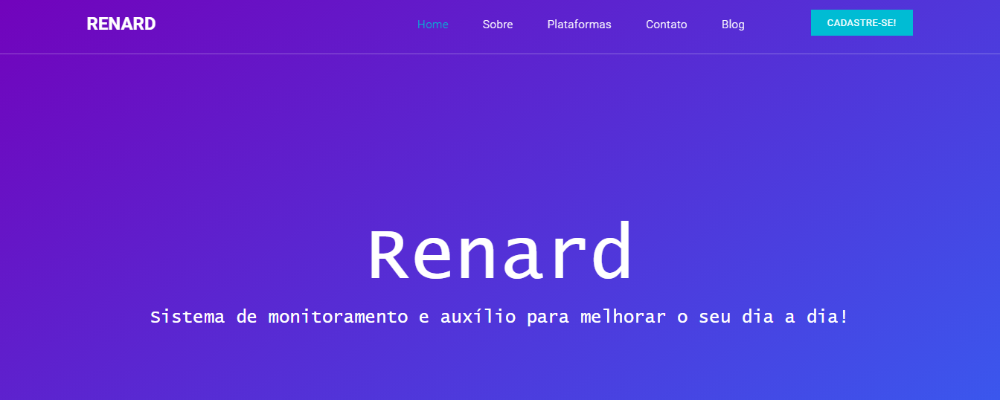

Olá, olá! Essa é a minha página pessoal. Seja bem vindx!

Farei uma breve apresentação: Me chamo Daniele Karoline, tenho 19 anos, sou natural de Registro/SP. Curso CC na UFFS, campi Chapecó/SC, e estou no 1° período. Meu gosto por computação começou no meu curso técnico em Desenvolvimento de Sistemas, pela Etec de Registro (a melhor de todas, diga-se de passagem). Apesar de tudo, ainda sou completamente novata e não tenho muitas habilidades notáveis porém, tento aumentar meu repertório e me esforço para aprender! :)
No decorrer da minha vida academica em tecnologia e programação, desenvolvi alguns trabalhos.
|  | |
| Etec, 2019 - 2020. | Etec, 2020. |
| Veja | Veja |
Possuo um breve conhecimento nas tecnologias:
Caso tenha interesse de me conhecer melho, pode entrar em contato ou ver meus trabalhos e formações nas redes abaixo: